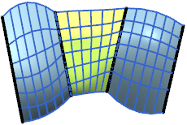
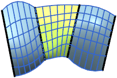
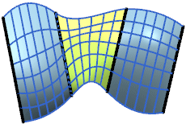

通过曲线组的连续性组
这将允许您选择第一个和/或结束曲线截面处的约束面，并指定连续性。在下面的两个示例中，上面一个示例表示通过曲线组曲面(绿色)为非约束曲面。位于下面一个的示例表示同一个曲面以 G2 方式约束到两个面集。

全部应用将相同的连续性应用于第一个和最后一个截面线串。当您选择此选项并选择连续性设置时，NX 将把更改应用于这两个设置。
从第一截面和最后截面中为模型选择相应的 G0(位置)、G1(相切)或 G2(曲率)连续性。如果选中了全部应用复选框，则选择一个便可更新这两个设置。
选择面允许您选择一个或多个面，或者片体作为第一个和最后一个截面。
流向将指定与约束曲面相关的参数直线的流体方向。所有连续性选项均设置为 G0（位置）时不可用。此选项仅适用于使用约束曲面的模型。
-
未指定：流向直接通到另一侧。

-
垂直：流向垂直于约束曲面的基本边。

-
等参数：流向沿约束曲面的等参数方向(U 或 V)。
